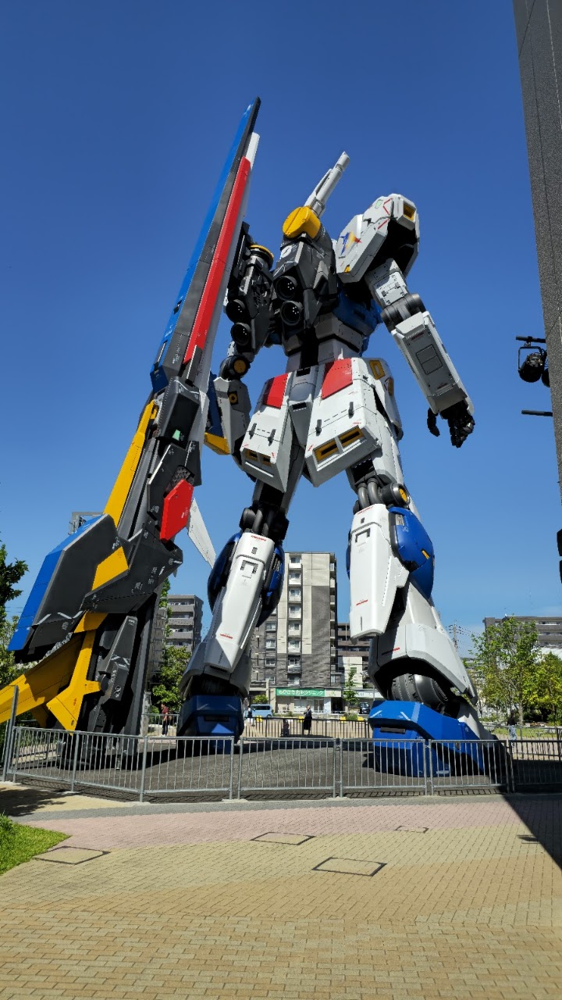
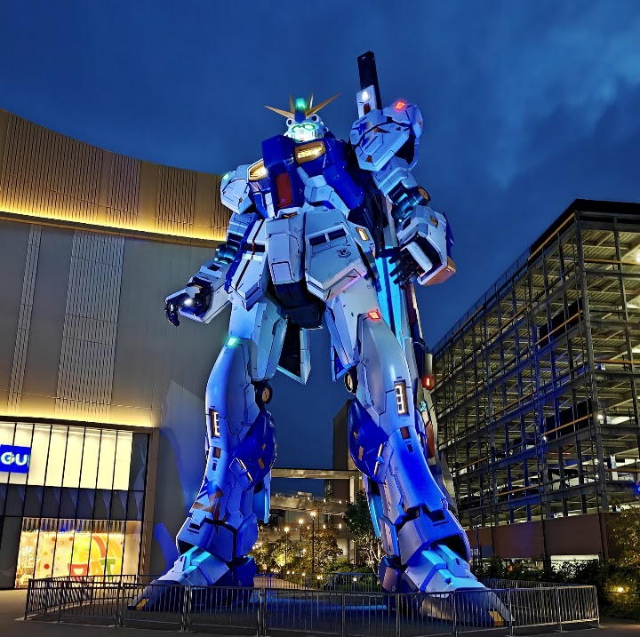
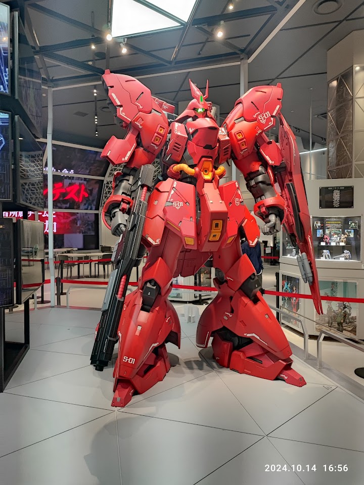
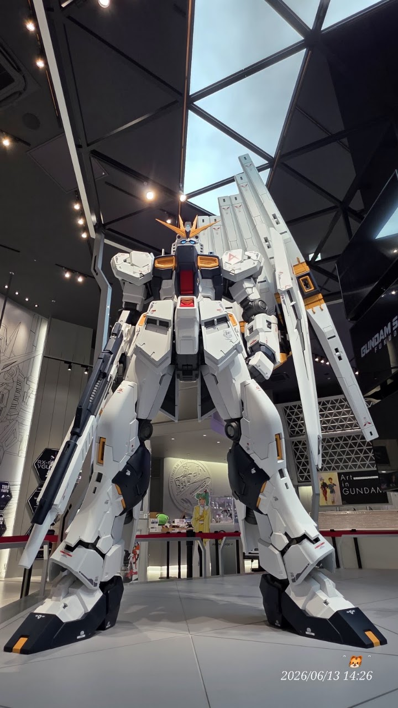

Life-Size RX-93ff 𝛎 Gundam Statue
Open in Google Maps (street view, more photos and reviews there)





Visitor tips on finding it and getting there
The life-size RX-93ff ν Gundam was the very first place I visited after arriving in Fukuoka, and it absolutely lived up to the hype. Standing nearly 25 meters tall in front of LaLaport Fukuoka, it’s an incredible sight and now the third life-size Gundam I’ve seen. The shopping mall behind it is also worth exploring, making it easy to spend a few hours in the area. My biggest tip is to take the bus instead of walking from the nearest train station; it drops you off just a couple of blocks away and makes getting there much easier.